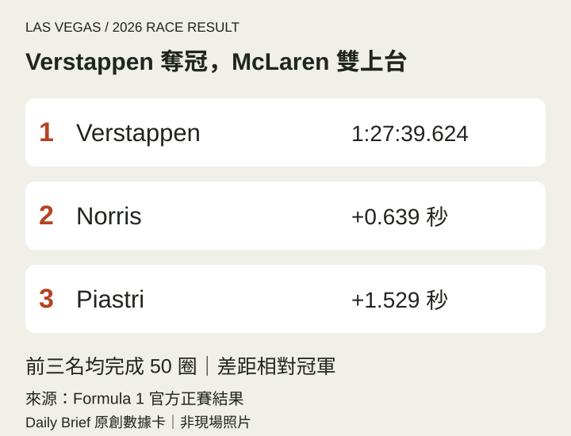

FORMULA 1 / THE ESSENTIALS
Verstappen 贏 Las Vegas，Norris、Piastri 雙登頒獎台
收錄於 2026-11-23 日報 · Formula 1 官方正賽結果及處罰註記
已確認的進展
- Las Vegas 當地 11 月 21 日正賽完成 50 圈，官方結果由 Verstappen 以 1:27:39.624 奪冠，Norris 第二（+0.639 秒）、Piastri 第三（+1.529 秒），Antonelli 第四。前期起跑安排已進展為正式正賽成績。
- 官方表已註明 Leclerc、Hadjar 各加罰 10 秒。F1 22 日另說明，Perez 與 Camara 碰撞被判全責；因 Perez 退賽無法服 10 秒處罰，改為下一場 Qatar 起跑退五位，不能算成他在 Vegas 成績單再退五名。
影響與限制
- McLaren 取得雙頒獎台；賽後判罰影響本場名次及下一站競爭位置。 本則採查核時官方成績與公開裁決，不把先前排位／起跑格當正賽結果，也不預測下一站格位或宣稱未公布的後續裁決。
後續更新：前期為排位及處罰後起跑格；本次新增已完成正賽的官方結果與賽後裁決。

原文與查核
以上為整理與解讀，重要細節請回到原文核對。
- Formula 1 官方正賽結果及處罰註記 ↗發布 2026-11-22 · 查核 2026-11-23T05:01:28+08:00
- Formula 1 官方 Perez 下場退位說明 ↗發布 2026-11-22 · 查核 2026-11-23T05:01:28+08:00